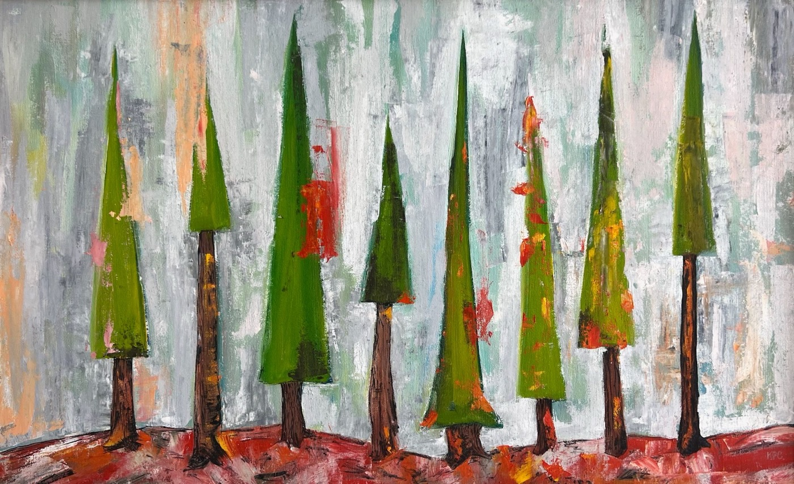
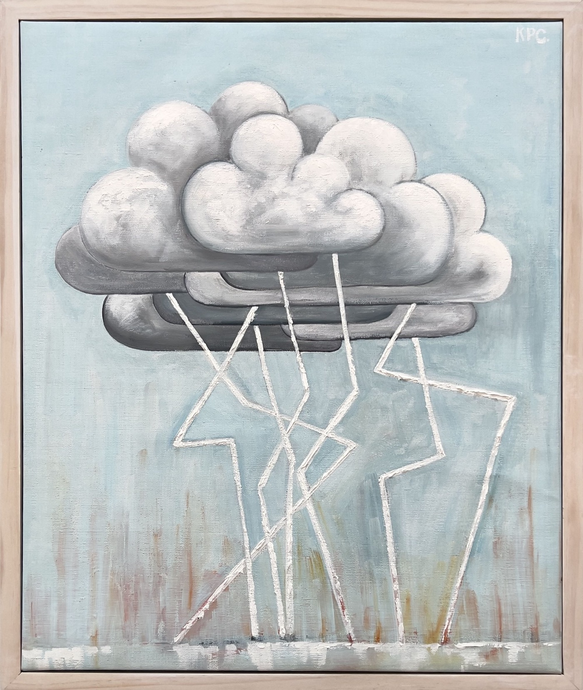

In May of 2022 the Black Fire started near Diamond Creek in the Aldo Leopold Wilderness near Truth or Consequences. I was beyond distraught about the burning of this area as it is a place near and close to our hearts.
I painted this painting in the first few days of the fire as I watched the daily afternoon plumes blot out the sun and dirty the sky.

above the clouds
Oil on linen · 2024 · the same country, two years on
2022
Fire is an important and natural part of the ecosystem — but the fires we have today are monsters.
They are a reality of our modern world and it is hard to come to terms with the simple fact that I will watch many beloved wilderness burn every year for the rest of my life.

the atmosphere's electric finger
Oil on linen · 2024 · what starts them
Elsewhere on this wall
Works that stand near The Black Fire — the weather paintings that
followed the strike of September 2023.

Harmonics
Oil on linen · 20 × 22 in · 2023 · "I was struck by lightning in September of
2023, and afterward I painted the sky differently."